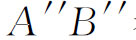
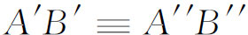
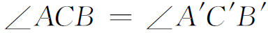
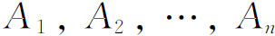
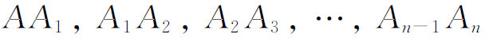
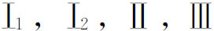
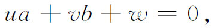
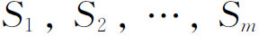
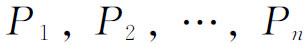

3．欧几里得几何的基础
在《几何原理》（I Principii di geometria，1889）中，皮亚诺给出了欧几里得几何的一个公理集。他也强调说基本的元素是不定义的。他规定了一条原则：不定义的概念应该尽可能少，他用了点、线段和运动。鉴于欧几里得使用叠合原理而受到的批判，所以把运动包括进去，看来似乎是有些令人吃惊的；但是，根本的问题并不在于运动的概念，而是在于，如果必须用到它时，还缺乏合适的公理基础。皮亚诺的学生皮埃里给出了一个类似的公理集(11)，他把点和运动作为不定义的概念。另外一个把直线、线段和线段的叠合作为不定义的元素的公理集，是由韦罗内塞（Giuseppe Veronese，1854—1917）在他的《几何基础》（Fondamenti di geometria，1891）中给出的。
在欧几里得几何的所有公理系统中，概念和陈述最简单、闯出的路子最接近于欧几里得且最受人们欢迎的公理集是属于希尔伯特的，他并不知道上述意大利人的工作。在《几何基础》（Grundlagen der Geometrie，1899）中，他给出了他的公理集的第一个叙述，但后来进行了很多次修改。下文引用的内容取自这本书的第七版（1930）。希尔伯特在使用不定义概念，以及这些概念的性质仅由公理来说明等方面，都追随帕施，认为无需给不定义的概念指定明晰的意义。就像希尔伯特说的那样，这些点、线、面以及其他元素，可以用桌子、椅子、啤酒杯以及别的什么东西来代替。当然，当几何同“事物”打交道时，这些公理肯定不是不证自明的真理，但必须把它们看作是任意的，即便它们事实上是由经验启示的。
希尔伯特首先列出他的不定义概念。它们是点、线、平面、位于上面（点和线之间的关系）、位于上面（点和平面之间的关系）、在……中间、一对点重合、角的重合。这个公理系统在同一个公理集中处理平面欧几里得几何及立体欧几里得几何，而这些公理又被分成几组。第一组公理包括存在性方面的公理：
Ⅰ．联系公理
Ⅰ1 对于每两个点A和B，有一条直线a位于它们上面。
Ⅰ2 对于每两个点A和B，只有一条直线位于它们上面。
Ⅰ3 一条直线上至少有两个点。不位于同一条直线上的点，至少是三点。
Ⅰ4 对于不位于一条直线上的任意三点A，B与C，都有一张平面α，位于这三点上（［包含］这三点）。在每一张平面上［至少］有一个点。
Ⅰ5 对于不位于同一条直线上的任意三点A，B和C，只能有一张平面包含它们。
Ⅰ6 如果一条直线上有两个点位于平面α上，那么这条直线上所有的点都位于α上。
Ⅰ7 如果两张平面α和β有一个公共点A，那么它们至少还有另外一个点B是公共的。
Ⅰ8 不在同一张平面上的点，至少是四点。
第二组公理补充了欧几里得公理集中最严重的遗漏，即关于点和线的相对顺序的公理。
Ⅱ．位于……之间的公理
Ⅱ1 如果一点B位于点A和C之间，那么A、B和C是同一条直线上的三个不同点，并且B也位于C和A之间。
Ⅱ2 对于任意两点A和C，直线AC上至少有一点B，使C位于A和B之间。
Ⅱ3 在一条直线上的任意三点中，只有一个点位于其他两点之间。
公理Ⅱ2和Ⅱ3的意思是使直线成为无限的。
定义 设A和B是直线a上的两点。点对A，B或者点对B，A就叫做线段AB。位于A和B之间的点称为这线段的点或者这线段的内点。A和B叫做这线段的端点。直线a上的所有其他的点都被说成是在这线段的外部。
Ⅱ4 （帕施公理）设A，B和C是不位于同一条直线上的三个点，并设a是A，B，C所在平面上不经过（不位于）A，B或C（上）的任意一条直线。如果a经过线段AB上的一个点，那么它必定还经过线段AC上的或线段BC上的一个点。
Ⅲ．叠合公理
Ⅲ1 如果A，B是直线a上的两个点，A′是a上或另一条直线a′上的一个点，那么在直线a′上，在A′的给定的一侧（预先已经规定好），可以找到一点B′，使线段AB和线段A′B′叠合。记为AB≡A′B′。
Ⅲ2 如果A′B′和

都与AB叠合，那么
。这条公理把欧几里得的“与同一个东西相等的东西，彼此也相等”的公理局限于线段。
Ⅲ3 设AB和BC是直线a上没有公共内点的两条线段，并设A′B′和B′C′是直线a′上没有公共内点的两条线段。如果AB≡A′B′，BC≡B′C′，那么AC≡A′C′。
这相当于把欧几里得公理“等量加等量，还得等量”用于线段。
Ⅲ4 设∠（h，k）位于平面α中，并设直线a′位于平面α′中，a′在α′中的确定的一侧已经给出。设h′是a′的从O′点出发的射线。则在α′中有且只有一条射线k′，使∠（h，k）和∠（h′，k′）叠合，且∠（h′，k′）的所有内点都位于a′的给定的一侧。每一个角与本身是叠合的。
Ⅲ5 在两个三角形ABC和A′B′C′中，如果AB≡A′B′，AC≡A′C′，∠BAC≡∠B′A′C′，那么∠ABC≡∠A′B′C′。
最后这条公理能用来证明

。考虑同样的两个三角形和同样的一些假设。不过，首先取AC≡A′C′，然后取AB≡A′B′，我们就有权断言∠ACB≡∠A′C′B′，因为在假设的新的次序下应用公理的词句，就产生这个新的结论。Ⅳ．平行公理
设a是一条直线，A不是a上的一个点。那么在a和A所在的平面上，最多只有一条经过A并与a不相交的直线。
至少存在一条经过A并与a不相交的直线是可以证明的，因此没有必要放在这条公理里。
Ⅴ．连续性公理
Ⅴ1 （阿基米德公理）如果AB和CD是任意两条线段，那么在直线AB上存在若干点

，使线段
都与CD叠合，并使B位于A和An之间。Ⅴ2 （直线完备性公理）直线上的点构成一个满足公理

和Ⅴ1的点集，而且不可能再把它扩大成一个继续满足这些公理的更大的集合。这条公理相当于要求直线上有足够的点，能够和实数构成一一对应。虽然这个事实自从坐标几何诞生之日起就被有意识和无意识地使用了，但是它的逻辑基础先前并没有叙述过。
希尔伯特用这些公理证明了欧几里得几何的一些基本定理。证明欧几里得几何的全部内容确实都能从这些公理推出来的工作是由其他一些人完成的。
欧几里得几何公理的随意性的特点（即它们不依赖于物理的现实性）产生了另外一个问题，即这门几何的相容性。只要欧几里得几何被认为是关于物理空间的真理，那么对它相容性的任何怀疑似乎都是没有什么意义的。但是对不定义概念和公理的新的理解要求相容性是已建立了的。这个问题至关紧要，因为非欧几里得几何的相容性已归结为欧几里得几何的相容性（第38章第4节）。1898年庞加莱提出这件事(12)，并说，一个公理式地建立起来的结构，如果我们能给它一个算术解释，就可以相信它的相容性。希尔伯特提供了这样一个解释，从而证明了欧几里得几何是相容的。
希尔伯特（在平面几何里）把点和一对有序实数（a，b）等同起来(13)，把一条直线与一组联比（u∶v∶w）（其中u和v不都为0）等同起来。如果

则点就在直线上。通过解析几何中平移和旋转的表达式，叠合就被代数地解释了；这就是，两个图形，如果其中的一个可以由另一个通过平移、x轴上的反射以及旋转而得到，则称它们叠合。
在每一个概念都被算术地解释，而且弄清楚公理是被这些解释所满足之后，希尔伯特的论点是：定理也必须适合于这些解释，因为它们是公理的逻辑的结果。假如欧几里得几何中有矛盾，那么同样的东西也会保持在它的代数解释（它是算术的一个扩充）中。因此，如果算术是相容的，则欧几里得几何也一定是相容的。但当时算术的相容性还是一个未解决的问题（见第51章）。
人们极想证明的是，在给定的公理集中，没有一条公理能由其他一条或所有公理推导出来，因为，不然的话，就没有必要把它作为一条公理了。这个无关性的概念是1894年皮亚诺在刚才提到的那篇论文［甚至更早一些，在他的《算术原理》（Arithmetices Principia，1889）］中提出并加以讨论的。希尔伯特考虑了他的那些公理的无关性。但是，因为在他的公理集中，某些公理的意义依赖于前面的一些，所以不可能证明每一条公理都与其他所有的公理无关。希尔伯特成功地证明了的是，任何一组中的所有公理都不能由另外四组公理推得。他的方法是作出一个满足四组公理、但不满足第五组公理的相容的解释或模型。
无关性的证明对非欧几里得几何有特殊的意义。为了建立平行公理的无关性，希尔伯特作出了一个不满足欧几里得平行公理但满足其余四组公理的模型。其中用了在欧几里得球内部的点以及把球的边界变为自身的特殊变换。因此，平行公理就不能是其他四组公理的推论，因为如果是的话，作为欧几里得几何一部分的这个模型关于平行就会有矛盾的性质。这同一证明也表明非欧几里得几何是可能的，因为如果欧几里得平行公理独立于其他公理，那么它的否定必然也是独立于其他公理的；而假如它是一个推论，则欧几里得公理的整个体系就会包含矛盾。
希尔伯特的欧几里得几何公理系统，第一次出现于1899年，激起了对欧几里得几何基础的大量关注，许多人使用不同的不定义元素集或公理的变种，做出了各种说法。正如我们已经提到过的，希尔伯特本人直到他做出1930年的说法之前，一直在改变他的公理体系。在为数众多的各种公理体系中，我们将只提到一个。维布伦(14)的公理体系是建立在把点和序作为不定义概念的基础上的。他证明了他的每一条公理都是独立于其他公理的，而且还建立了另外一条性质：范畴性。亨廷顿（Edward V．Huntington，1874—1952）在专门讨论实数系的一篇论文中(15)第一次清楚地叙述并使用了这个概念（他把这个概念叫做充分性）。与不定义符号集

相联系的公理集
称为是范畴的，如果在任何两个含有不定义符号并满足公理集的成员之间，能够建立不定义概念（它们由公理所维护的关系而被保存）之间的一一对应；也就是说，这两个系统是同构的。实际上，范畴性意味着公理系统的所有解释仅仅是语言上的不同。例如，若把平行公理略去，那么这一性质就会不成立，因为这时欧几里得几何和双曲型非欧几里得几何就会是这缩减了的公理集的非同构解释。范畴性还隐含着另外一条性质，维布伦把它叫做析取性，而今天通称为完全性。一个公理集叫做完全的，如果不可能再增加一条与给定集无关并与之相容的公理（不引入新的初始概念）。范畴性隐含着完全性，因为如果一个公理集合A是范畴的，但不完全，那就可以引进一条公理S，使得S和非S都与集合A相容。因为原来的集合A是范畴的，所以A与S在一起的公理集和A与非S在一起的公理集的解释是同构的。然而这是不可能的，因为对应的命题在两个解释中必须都成立，但是S适用于一种解释，而非S却适用于另一种解释。